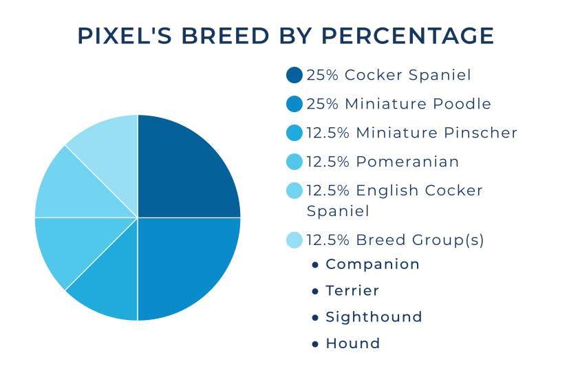
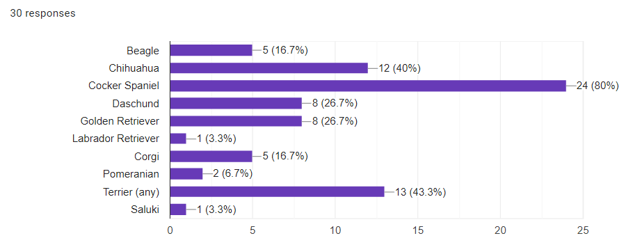
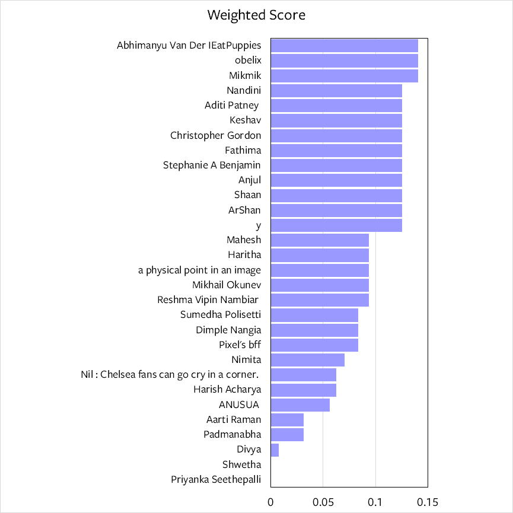

What is Pixel?Thank you for your responses! We just got the results, and it looks like our Pixel is basically a spaghetti / mixed-veg of breeds, with a major bend towards Cocker Spaniel:  We love this---his uniqueness is the best part of his personality. That's why our guessing game was fun. 30 people put in their guesses!  In aggregation, we were on the right track. Most of us saw the Spaniel in Pixel. But how did we do individually? No need to wait any more, scroll down for the results. Congrats to Abhimanyu (don't eat puppies!), obelix, and Mikmik for getting the highest score. Where did you end up? This was a tough one. Even Pixel's parents were nowhere close :-)  |